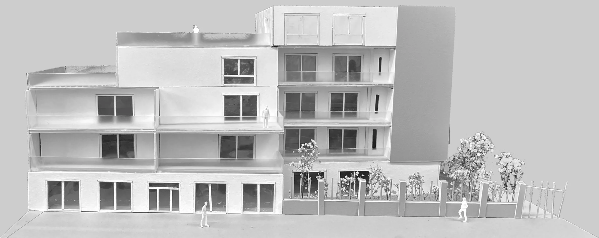
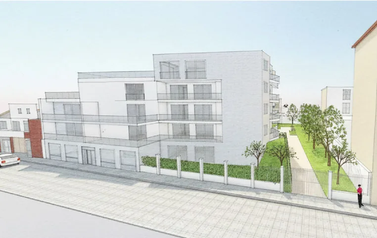
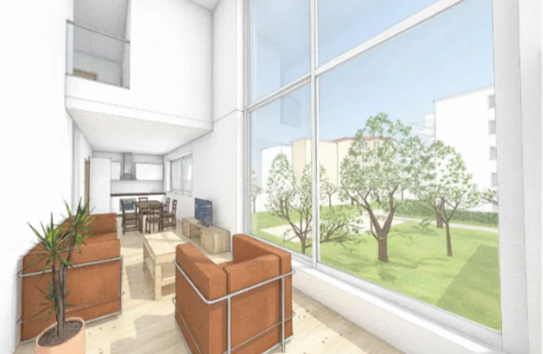
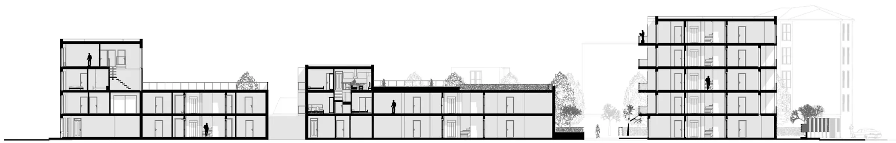

RESIDENCE JARDINS



Ce projet de logements d’habitation situé à Montreuil développe 30 logements organisés autour de trois jardins principaux, avec l’idée de placer la végétation et les espaces extérieurs au centre de l’habitat et du quotidien des habitants.
Dès ma première visite du site, ce qui m’a marqué est la manière dont la végétation s’immisce dans les interstices urbains, le long des clôtures et entre les différentes constructions. Cette présence discrète mais forte a guidé ma réflexion et m’a amené à concevoir une architecture en continuité avec le paysage existant.
Les logements, du T2 au T5, s’organisent autour de cours et d’espaces extérieurs qui prolongent les usages du logement vers l’extérieur.
Chaque appartement dispose d’un balcon, d’une loggia, d’une terrasse ou d’un jardin privé, permettant d’apporter de la lumière naturelle, d’ouvrir les vues et de créer différentes manières d’habiter.
Le projet cherche ainsi à offrir des espaces traversants, lumineux et ouverts, tout en proposant une densité urbaine capable de préserver une qualité de vie quotidienne.


Projet réalisé en deuxième année de licence a l’Ecole Spéciale d’Architecture – 2025